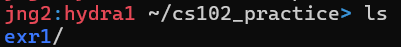
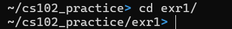
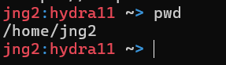
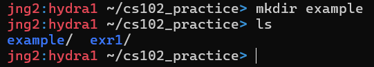
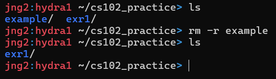
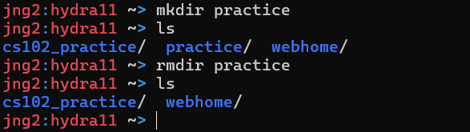
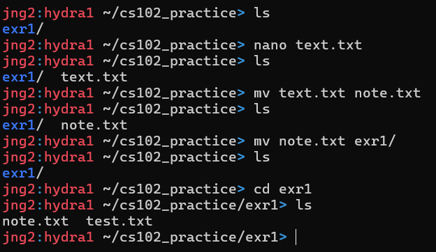
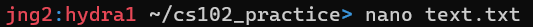
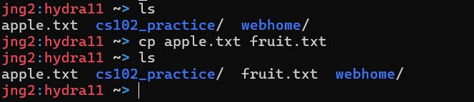
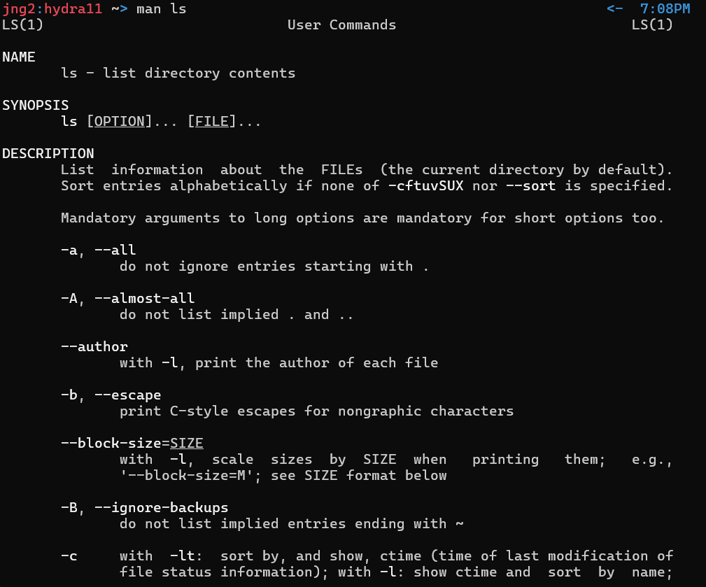

COSC102 Notes
Terminal VS. Shell
The terminal is an application/program that can be used to issue commands to the computer. Runs a shell.
The shell is the layer that transfers the command from the keyboard to the actual OS.
| Command |
Use |
Example |
Additional Notes |
| ls |
List files in the current directory. For more detailed listing of the directory contents, type " -l" after "ls." |
 |
| cd |
Moves to a different directory. Type "cd .." to go back one directory. |
 |
| pwd |
Verifies your current directory. |
 |
| mkdir |
Makes a directory |
 |
| rm |
Removes a file or directory. To remove a directory, add "-r" before the folder name. Does not give warnings. |
 |
| rmdir |
Removes a directory only if it's empty. |
 |
| mv |
Moves a file or a directory or renames them |
 |
| ssh |
Connects to other machines |
ssh username@hydra0.eecs.utk.edu |
| nano |
Text Editor |
 |
| vi/vim |
Another text editor. To exit, press esc then type ":q"(exits without saving). Press enter after. |
 |
| g++ |
C++ Compiler. Makes an executable from C++ course code files. |
 |
- simple g++ source.cpp
- g++ -o exec_name source(s)
- g++ -std=c++11 -o exec source(s)
|
| clear |
Clears the screen. |
clear |
| cp |
Copies a file. Input the name of file you want to copy after cp, if you want to specify the destination of the new file, input it after. |
 |
- scp -- copy variant, for transfer from one machine to another -- scp ~ username@hydra12.eecs.utk.edu:path
|
| man |
Short for "manual." Quick and easy way to access useful documentation on any command. Type it before any command. |
 |
| w |
Shows who is logged on and what they are doing. |
w |
| who |
Shows who is logged on and where they are |
who |
| chmod |
Changes file or directory permissions |
chmod 755 test.cpp |
- user, group, world
- IMPORTANT(TEST): r=read=4, w=write=2, x=execute=1
- Number beside chmod is sum.
- (ex.) 7 -- can read, write, and execute; 5 -- can read and execute
- Default = 700
- (ex.)chmod 755 -- user:7; group:5; world:5
- 0: nothing
|
| lscpu |
|
|
|
| lshw |
|
| hostname -i |
|
|
|